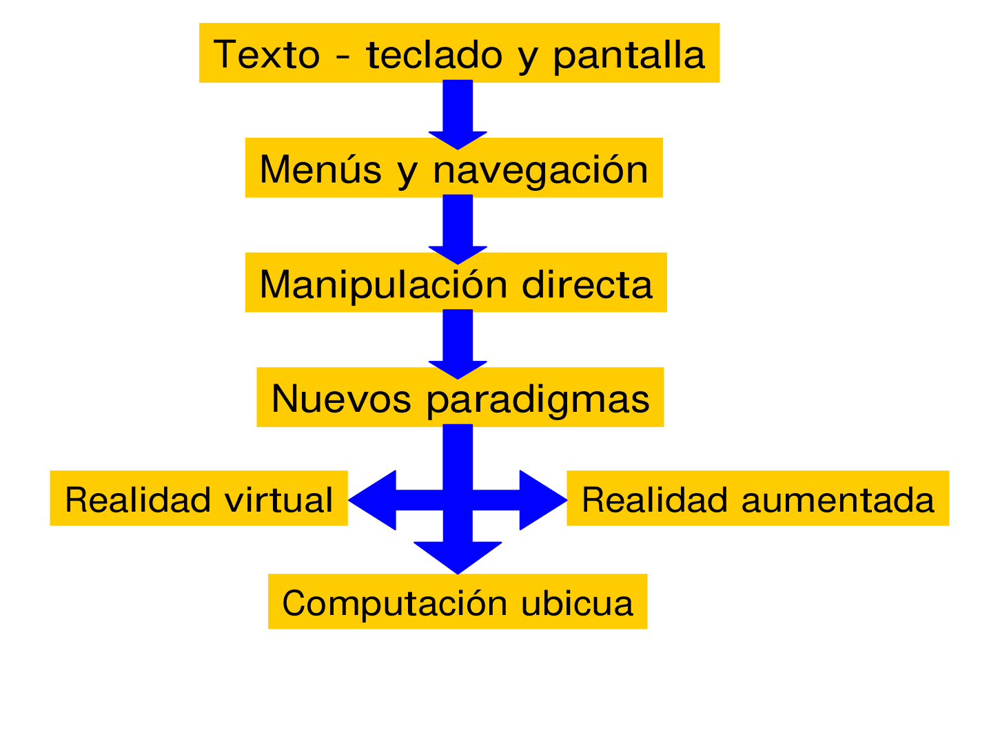
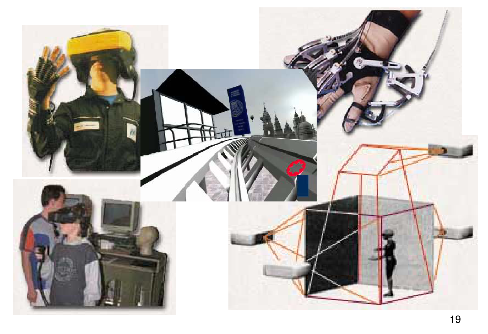
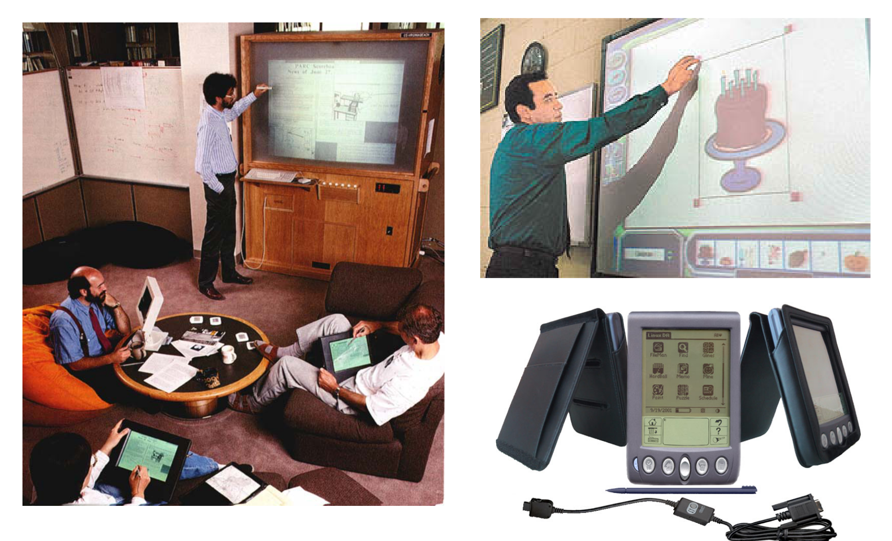
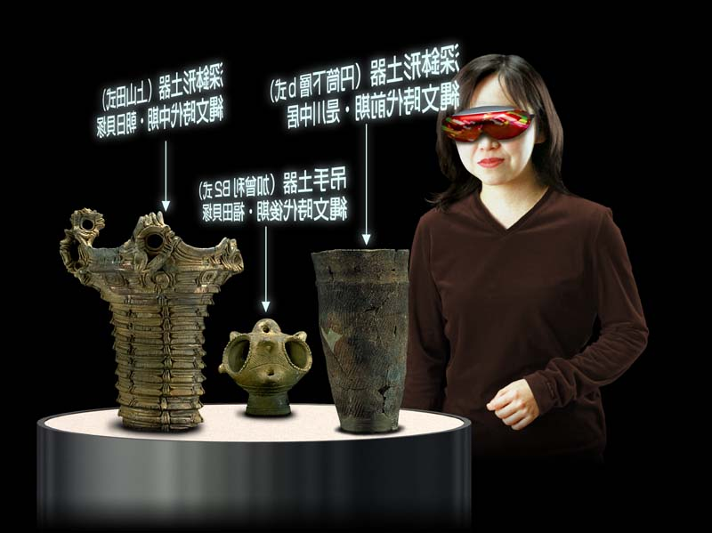
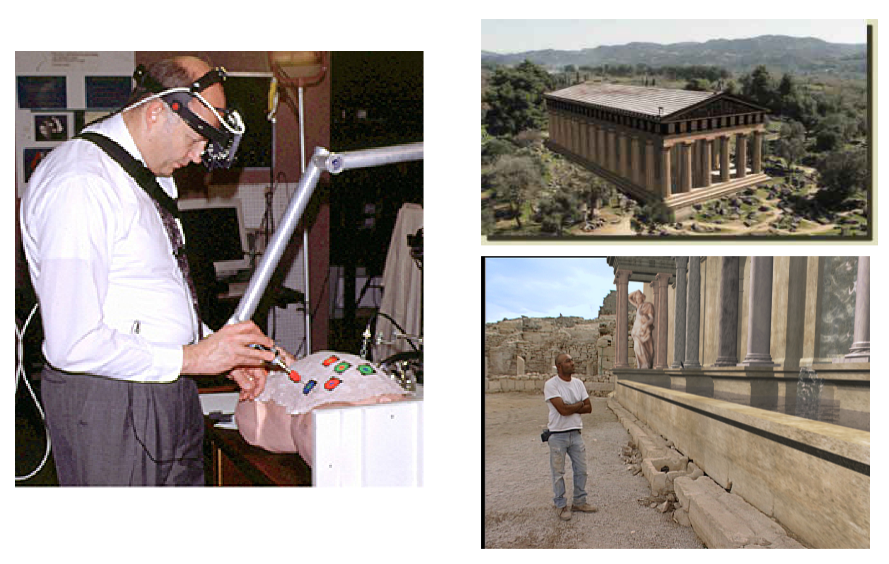
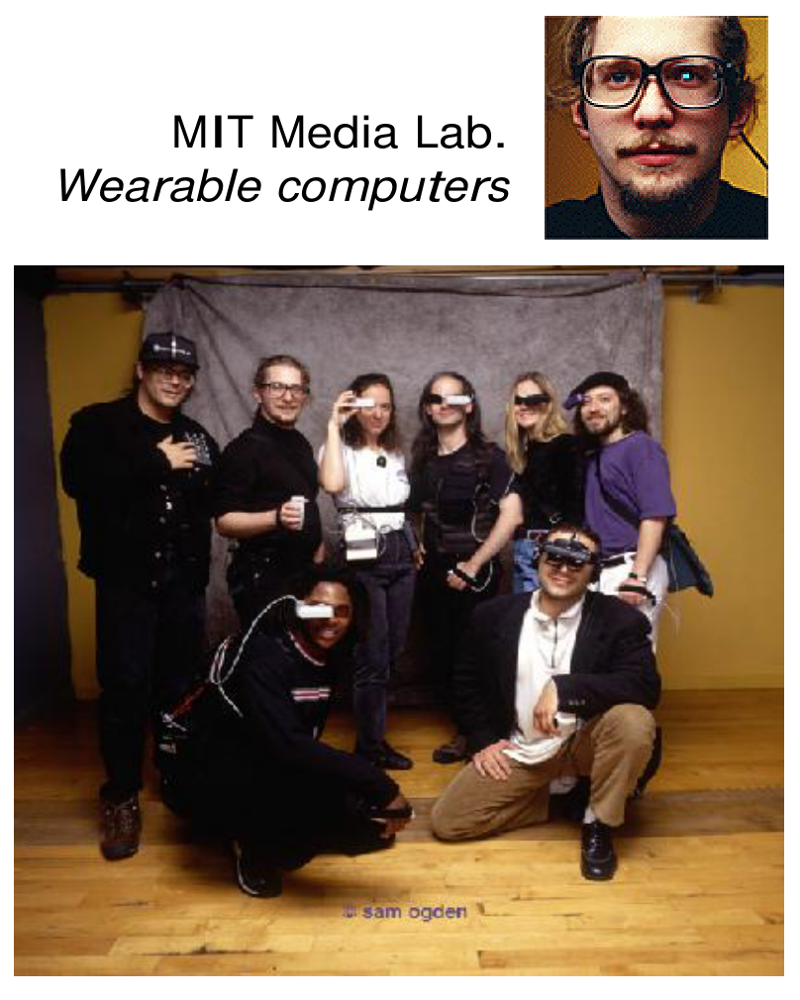
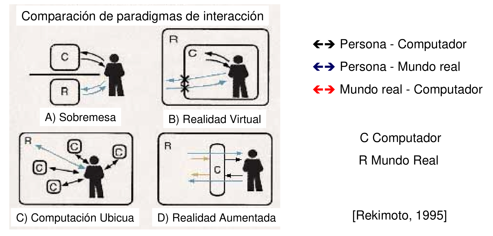

Estilos y paradigmas de interacción
Temas de IPO · 7/8
7.1 Evolución de la interacción
La forma de comunicarse con el ordenador ha pasado por varias etapas. Empezó con el texto (teclado y pantalla), siguió con los menús y la navegación, después llegó la manipulación directa, y ahora aparecen nuevos paradigmas: la realidad virtual, la realidad aumentada y la computación ubicua.

7.2 Estilos de interacción
Las interacciones son todos los intercambios entre la persona y el ordenador. Una interacción es multimodal cuando usa varios canales de comunicación humana a la vez (voz y gestos, por ejemplo). Un estilo de interacción es el término genérico que agrupa las diferentes maneras en que los usuarios se comunican con el ordenador. Hay cinco.
7.2.1 Interfaz por línea de órdenes
Fue el primer estilo de uso generalizado. Consiste en dar instrucciones directamente al ordenador escribiendo palabras enteras o abreviaturas, que son más fáciles de recordar (copy, cp), o con caracteres y teclas de función, que son más rápidas de ejecutar (CTRL + C). Ejemplos: ls -la en UNIX o dir *.htm en MS-DOS.
Su gran baza es la flexibilidad. Las opciones modifican el comportamiento de cada orden, y una orden se puede aplicar a muchos objetos a la vez (*.htm). Permite la iniciativa del usuario y es atractiva para expertos, porque da acceso directo a la funcionalidad del sistema. Es potencialmente rápida para tareas complejas y permite crear macros.
El precio es que exige mucha memorización y entrenamiento. No hay indicación visual de qué orden se necesita, así que es más útil para expertos que para principiantes. Además, su gestión de errores es pobre.
Analogía
La línea de órdenes es como pedir en un bar hablando con el camarero: si sabes exactamente qué quieres y cómo se llama ("un cortado de máquina con leche de avena, templada"), es lo más rápido y flexible. Pero si no conoces la carta, no tienes ni idea de qué pedir.
7.2.2 Menús y navegación
Un menú es un conjunto de opciones visualizadas en pantalla que se pueden seleccionar y que llevan a ejecutar una acción asociada y, no siempre, a un cambio en el estado de la interfaz. Suelen estructurarse jerárquicamente y hay guías de estilo para diseñarlos. El número ideal de opciones es entre 3 y 8.
Requieren poco entrenamiento y menos tecleo, permiten usar herramientas de gestión de diálogos y ofrecen una toma de decisión estructurada: el usuario reconoce la opción en vez de recordarla.
Sus desventajas tienen solución. Pueden ser lentos para usuarios experimentados, y se resuelve con atajos de teclado. Ocupan mucho espacio, y se resuelve con menús desplegables y pop-up. Lo que no tiene arreglo es que requieren una visualización rápida.
Analogía
Siguiendo con el bar, el menú es la carta: no tienes que saber nada de antemano, solo señalar. El cliente habitual, en cambio, se cansa de leerla cada día y prefiere decir "lo de siempre" (el atajo).
7.2.3 Lenguaje natural
Tiene dos beneficios: el usuario ya conoce su propio lenguaje, y si usa la voz tiene las manos libres. Los problemas son las diferencias de idioma, argot y voz, que pueden obligar a hacer diálogos de clarificación, y que las interfaces todavía no son inteligentes. Las diapositivas ponen como ejemplo programas de dictado de la época, como IBM ViaVoice y Dragon NaturallySpeaking.
7.2.4 Manipulación directa
Según Shneiderman (1991), la manipulación directa tiene tres características:
- Representación continua de los objetos y acciones de interés.
- Sustituye una sintaxis de órdenes compleja por la manipulación de objetos y acciones.
- Las acciones son rápidas, incrementales y reversibles y tienen un efecto visible inmediato en el objeto seleccionado.
Es posible gracias a las pantallas gráficas de alta resolución y los dispositivos apuntadores. Históricamente arranca con el Xerox Star y el Apple Macintosh. Su entorno más común es la interfaz WIMP (Windows, Icons, Menus, Pointers: ventanas, iconos, menús y puntero).
Los nuevos usuarios aprenden rápido, los expertos trabajan rápido, todos ven enseguida el resultado de sus acciones y las acciones son reversibles. A cambio, necesita más recursos, no todas las tareas se pueden describir con objetos concretos y no todas las acciones se pueden hacer directamente.
Analogía
Borrar un archivo arrastrándolo a la papelera es manipulación directa: ves el archivo, lo coges, lo sueltas y desaparece. Si te equivocas, lo sacas de la papelera. Pero "borra todos los archivos de más de un año" es difícil de hacer arrastrando: ahí gana la línea de órdenes.
Para entenderlo mejor
Manipulación directa (Wikipedia) — el concepto de Shneiderman y sus características (artículo).
7.2.5 Interacción asistida
La manipulación directa exige que el usuario explicite todas las tareas y controle todos los eventos. El número creciente de nuevos usuarios pide otra forma de interactuar. La interacción asistida usa la metáfora del asistente personal o agente que colabora con el usuario: el usuario no dirige la interacción, sino que trabaja de forma cooperativa con uno o varios agentes. Así se reduce su esfuerzo. Hay dos variantes: agentes y asistentes.
Un agente es un programa que el usuario ve como un ayudante, no como una herramienta. Tiene algunas características de la inteligencia humana: capacidad de aprender, inferencia, adaptabilidad, independencia, creatividad… (Lieberman, 1997). El usuario no ordena, delega tareas en el agente (Maes, 1994). El agente es más discreto que el asistente: trabaja en segundo plano y actúa por iniciativa propia cuando encuentra algo relevante para el usuario, y puede modificar objetos de la interfaz sin instrucciones explícitas.
Las propiedades de un agente son tres:
| Propiedad | Qué implica |
|---|---|
| Autonomía | Trabaja en segundo plano; observa al usuario y las fuentes de información disponibles |
| Inteligencia | Actúa por iniciativa propia; se adapta a múltiples situaciones variando su estrategia |
| Uso personal | Se adapta y aprende del usuario; no insiste en una solución si el usuario elige otra |
Los asistentes, magos y guías son entidades que nos ayudan a usar las aplicaciones existentes. Nos explican de forma fácil lo que hay que hacer y pueden entender palabras escritas o habladas o acciones gráficas. Son muy flexibles recibiendo instrucciones, porque el usuario solo dice lo que quiere hacer, y pueden aprender de él. La diferencia clave con el agente es que el asistente lo activa el usuario.
7.2.6 Comparación de estilos
| Estilo | Ventajas | Desventajas |
|---|---|---|
| Línea de órdenes | Flexible, iniciativa del usuario, rápida para expertos, macros | Memorización, sin pistas visuales, mala gestión de errores |
| Menús | Poco entrenamiento, menos tecleo, decisión estructurada | Lentos para expertos, ocupan espacio, requieren visualización rápida |
| Lenguaje natural | Lenguaje conocido, manos libres (voz) | Idiomas, argot y voces distintos; interfaces aún no inteligentes |
| Manipulación directa | Aprendizaje rápido, efecto visible, reversible | Más recursos; no todo se puede representar ni hacer directamente |
| Interacción asistida | Menos esfuerzo; el usuario delega | El usuario no dirige la interacción |
note
Esta tabla no está en las diapositivas: resume las ventajas y desventajas de cada estilo, que según las notas de examen pueden preguntarse.
7.3 Paradigmas de interacción
Los paradigmas de interacción son los modelos de los que se derivan todos los sistemas de interacción. Los actuales son el ordenador de sobremesa, la realidad virtual, la computación ubicua y la realidad aumentada.
7.3.1 Realidad virtual
El término realidad virtual (RV) se aplica a interfaces 3D con las que se puede interactuar y que se actualizan en tiempo real, y a sistemas cuyo nivel de autonomía, interacción y sensación de presencia es casi igual al del mundo real.
Para hablar de RV se tienen que cumplir tres condiciones:
- Sensación de presencia física directa, mediante indicaciones sensoriales (visuales, auditivas, hápticas) creadas por la tecnología.
- Indicaciones sensoriales en tres dimensiones.
- Interacción natural: los objetos virtuales se manipulan con los mismos gestos que los reales (coger, girar…).

7.3.2 Computación ubicua
La computación ubicua trata de extender la capacidad computacional al entorno del usuario. Sus características principales son cuatro: la información está presente en todas partes, usa pequeños dispositivos muy diversos, realiza interacciones de poca dificultad y se conecta en red a servidores de información. El diseño y la ubicación de cada dispositivo son específicos de la tarea para la que sirve. El ordenador pasa a un segundo plano y se intenta que sea "transparente" al usuario: el ordenador invisible (Donald Norman, The Invisible Computer, MIT Press, 1998).
Su origen está en Mark Weiser, de Xerox PARC ("The computer for the 21st century", Scientific American, vol. 265, nº 3, pp. 94–104, 1991). Hay una gran variedad de dispositivos (PDA, tabletas, pizarras electrónicas, agendas…), y se habla de entornos en los que el usuario no interactúa con ordenadores, sino con dispositivos de diverso tipo y tamaño.
Necesita tres cosas: ordenadores baratos y de bajo consumo, programas de ejecución ubicua y una red que lo unifique todo. Según las diapositivas, los avances en hardware aún no bastan para que sustituya al ordenador de sobremesa.

Analogía
La computación ubicua es como la electricidad: está en todas partes, en cientos de aparatos distintos, y nadie piensa en ella al encender la luz. El objetivo es que con los ordenadores pase lo mismo: usar el termostato, el reloj o la pizarra sin "usar un ordenador".
Para entenderlo mejor
Computación ubicua (Wikipedia) — la visión de Mark Weiser y ejemplos actuales (artículo).
7.3.3 Realidad aumentada
La realidad aumentada (RA) intenta reducir las interacciones con el ordenador usando la información del entorno como entrada implícita. Integra el mundo real y el computacional: el mundo real aparece aumentado con información sintética, y así baja mucho el coste interactivo.
Sus objetivos son mejorar la interacción con el mundo real, integrar el ordenador en las actividades cotidianas y dar acceso a usuarios diversos y no especializados, convirtiendo los objetos cotidianos en objetos interactivos. También busca trasladar el foco de atención del ordenador al mundo real: la información va al mundo real, en lugar de meter el mundo real en el ordenador como hace la RV.
El método más común es superponer información digital a las imágenes del mundo real mediante visualizadores en casco o proyecciones de vídeo. El sistema reconoce automáticamente la situación del usuario con diversas técnicas: tiempo, posición, objetos, códigos de barras…

Hay dos enfoques:
- Aplicar la RV al mundo real: se mejora la visión del mundo real con información sintetizada, superpuesta mediante gafas especializadas.
- Usar dispositivos que aumentan la realidad e interactúan directamente con ella: el usuario actúa sobre el mundo real aumentado. No se superpone información, sino que participan objetos cotidianos (un lápiz, una mesa) que interactúan con el sistema de forma automática.

Un caso particular son los ordenadores corporales (wearable computers, MIT Media Lab). Sus objetivos son llevar el ordenador encima, interactuar con el usuario según el contexto y enlazar la información del entorno personal con la de un sistema informático. Deben ser cómodos, naturales y estar integrados en la vestimenta.

7.4 Comparación entre paradigmas
Rekimoto (1995) compara los cuatro paradigmas según cómo se relacionan la persona, el computador (C) y el mundo real (R):

| Paradigma | Relación persona–computador–mundo |
|---|---|
| A) Sobremesa | Computador y mundo real están separados: la persona interactúa con uno o con otro |
| B) Realidad virtual | El computador envuelve a la persona y corta su relación con el mundo real (las flechas hacia R están tachadas) |
| C) Computación ubicua | Muchos computadores repartidos por el mundo real; la persona interactúa con ellos y con el mundo a la vez |
| D) Realidad aumentada | El computador se interpone como filtro transparente entre persona y mundo real, y recibe información del mundo (entrada implícita) |
Analogía
Para consultar una receta mientras cocinas: en sobremesa, dejas la sartén y vas al ordenador. En RV, te pones un casco y cocinas en una cocina simulada. En computación ubicua, la nevera, el horno y la báscula llevan pequeños ordenadores que te avisan. En RA, unas gafas te dibujan sobre la sartén real cuánto falta y qué ingrediente toca.
7.5 Ideas clave
- Estilo de interacción: las distintas maneras en que el usuario se comunica con el ordenador. Multimodal: varios canales a la vez.
- Línea de órdenes: el primer estilo generalizado. Flexible, rápida y con macros para expertos; exige memorizar, no tiene pistas visuales y gestiona mal los errores.
- Menús: entre 3 y 8 opciones, jerárquicos; poco entrenamiento. Lentos para expertos (solución: atajos) y ocupan espacio (solución: desplegables y pop-up).
- Lenguaje natural: lenguaje conocido y manos libres; problemas de idiomas, argot y voces, e interfaces aún poco inteligentes.
- Manipulación directa (Shneiderman, 1991): representación continua; acciones rápidas, incrementales, reversibles y visibles. WIMP, Xerox Star, Macintosh. Necesita más recursos y no todo es representable.
- Interacción asistida: el usuario delega. El agente es autónomo, inteligente y personal, y actúa por iniciativa propia; el asistente lo activa el usuario.
- Paradigmas: sobremesa, RV (presencia, 3D, interacción natural), computación ubicua (Weiser; ordenador invisible; muchos dispositivos pequeños en red) y RA (información sintética sobre el mundo real; entrada implícita del entorno; casco o proyección; ordenadores corporales).
- Rekimoto (1995): la RV aísla del mundo real; la RA lo filtra y aumenta; la ubicua reparte computadores por él; el sobremesa lo mantiene separado.